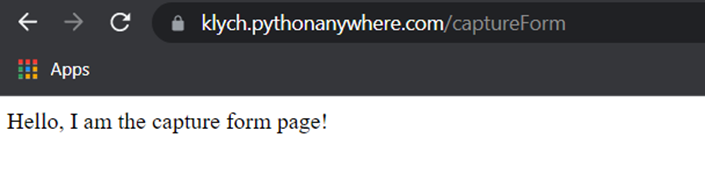
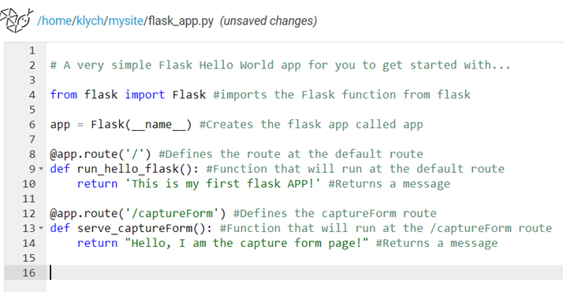

Routes
So, lets now add some more routes, for example lets add a route that will in future act as out capture form. Just copy the other route code, but change the “/” to “/captureForm” and delete all comments. Then, lets call the function something else, something like “server_captureForm():”. Then, after the return, type what ever you like, I typed “Hello, I am the capture form page!”. Now, reload the web page. Now, wait, why is that I am getting the message from a different app? Well, we need to access the code within the captureForm route, this can be done by typing in /captureForm after the URL for your web app, mine looks something like this: https://klych.pythonanywhere.com/captureForm, this is what I have:

If you have the same, or something that you wrote, fantastic! If not, go back and read through again, you might have missed something.
Okay, now as we have a route working, lets add some comments to the code.
# A very simple Flask Hello World app for you to get started with...
from flask import Flask #imports the Flask function from flask
app = Flask(__name__) #Creates the flask app called app
@app.route('/') #Defines the route at the default route
def hello_world(): #Function that will run at the default route
return 'Hello from Flask!' #Returns a message
@app.route('/captureForm') #Defines the captureForm route
def serve_captureForm(): #Function that will run at the /captureForm route
return "Hello, I am the capture form page!" #Returns a message
